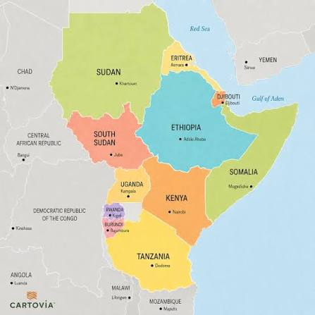

East Africa
Kenya · Uganda · Tanzania · Rwanda · Ethiopia
East African cooking stretches from the cool highlands of Kenya and Ethiopia to the warm Indian Ocean coast. It is a cuisine of hearty staples, fresh greens and slow-cooked stews, shaped by farming communities, pastoralists and centuries of ocean trade.
Explore East Africa 5 recipes on this site